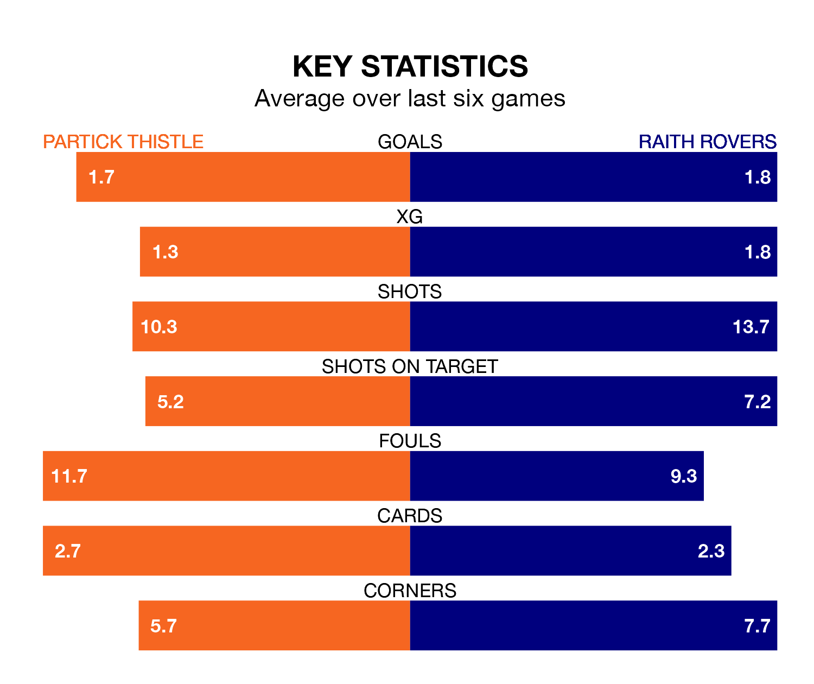

Raith Rovers travel to Wyre Stadium at Firhill for Saturday's match against Partick Thistle looking to bounce back from defeat last time out in the Championship.
Raith, who sit second in the league after 22 games, fell to a 3-2 home defeat to Inverness CT on January 27.
They face a Partick Thistle side who secured a draw in their last match, a 1-1 tie with Airdrieonians, and who sit third in the table.
With 43 goals in 22 games so far this season, Partick Thistle are the league's joint-highest scorers with 2.0 goals per game. But they are conceding more than average too, letting in 34 goals at a rate of 1.5 per game.
Raith are also above average scorers, with 1.8 goals per game, compared to a league average of 1.4. They have conceded 1.4 goals per game.
In Lewis Vaughan, Rovers have the league's sharpest shooter so far this season. He has notched 11 goals in 22 appearances.
His goal rate of one every 138 minutes is quicker than that of Brian Graham, Thistle's top scorer with a goal every 160 minutes, and a total of 10 goals in 20 games.
In the last 10 years, Partick Thistle and Raith have played each other on 11 occasions. Partick Thistle won three of them, Raith five, and they drew three times.
On average, Thistle scored 1.5 goals and Raith 1.6 in those matches.
Their last meeting was on December 8, when Raith won 4-3 at home.
The hosts are in mixed form in the Championship, with two wins and three draws from their last six games.
With a win and two draws over that period, the away team's form is worse – they have taken five points from 18, compared to Partick Thistle's nine.
Updated: 15:45 (UTC), 02/02/24